Aktuálna ponuka
Nehnuteľnosti, ktoré ponúkam
11 nehnuteľností na predaj a prenájom. Vyberte typ, alebo napíšte lokalitu.
11 z 11 ponúk
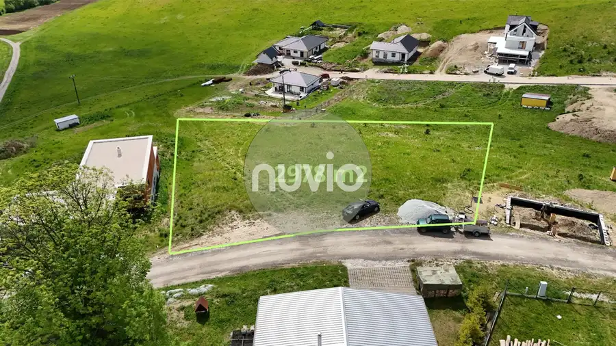
Pozemok3 276 954 €Rozľahlý pozemok na predaj Turčianske Jaseno Turčianske Jaseno 2978 m² Ponúkame na predaj výnimočný a priestranný pozemok s celkovou rozlohou 2 978 m², ktorý sa nachádza v malebnej obci Turčianske Jaseno. Nehnuteľnosť je…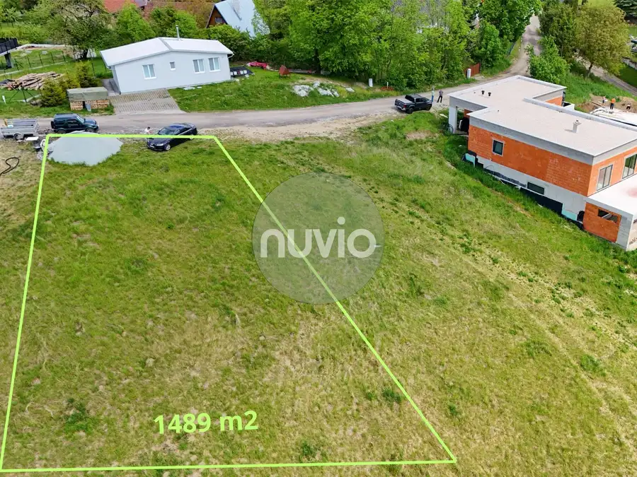
Pozemok2 139 050 €Slnečný pozemok na predaj obec Turčianske Jaseno Turčianske Jaseno 1489 m² Ponúkame na predaj výnimočný a priestranný pozemok s celkovou rozlohou 1489 m², ktorý sa nachádza v malebnej obci Turčianske Jaseno. Nehnuteľnosť je…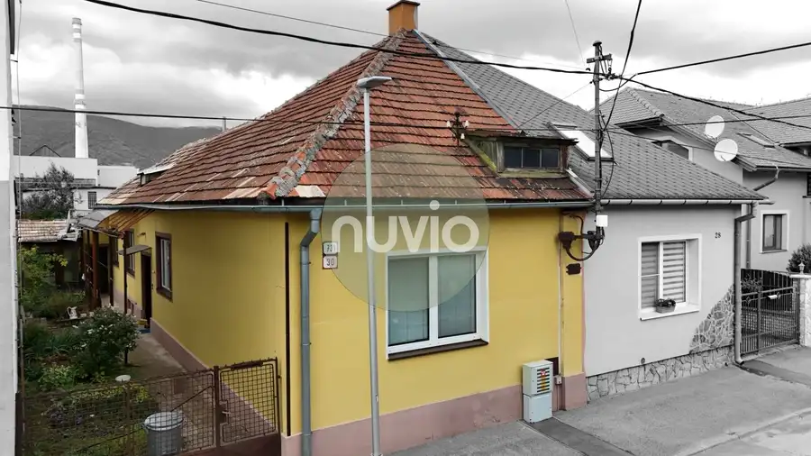
Rodinné domy7 146 150 €RUPPELDTOVA - Rodinný dom na predaj Martin 3-izbový120 m² Ponúkame na predaj 3 izbový Rodinný dom s úžitkovou plochou 140 m², ktorý je podpivničený. Dom je postavený z tehly a pozostáva z troch izieb,…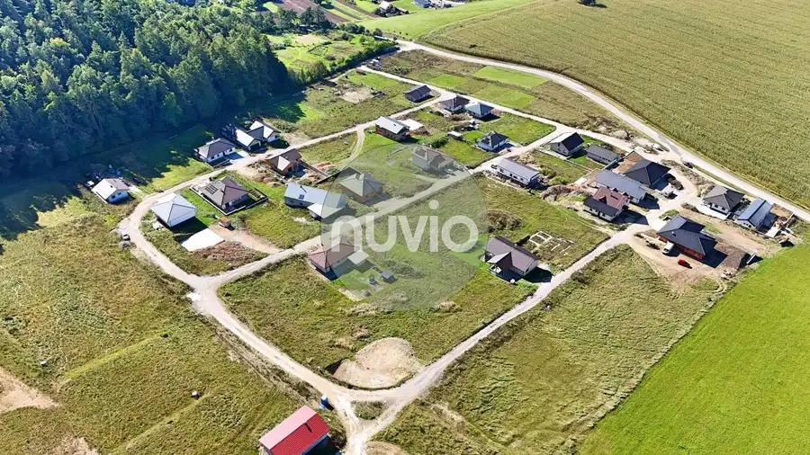
Pozemok4 55 000 €Stavebný pozemok na predaj obec Necpaly Necpaly 507 m² Ponúkame na predaj Pozemok pre rod. domy s rozlohou 507 m2. K pozemku vedie spevnená prístupová cesta. K dispozícii sú inžinierske siete ako…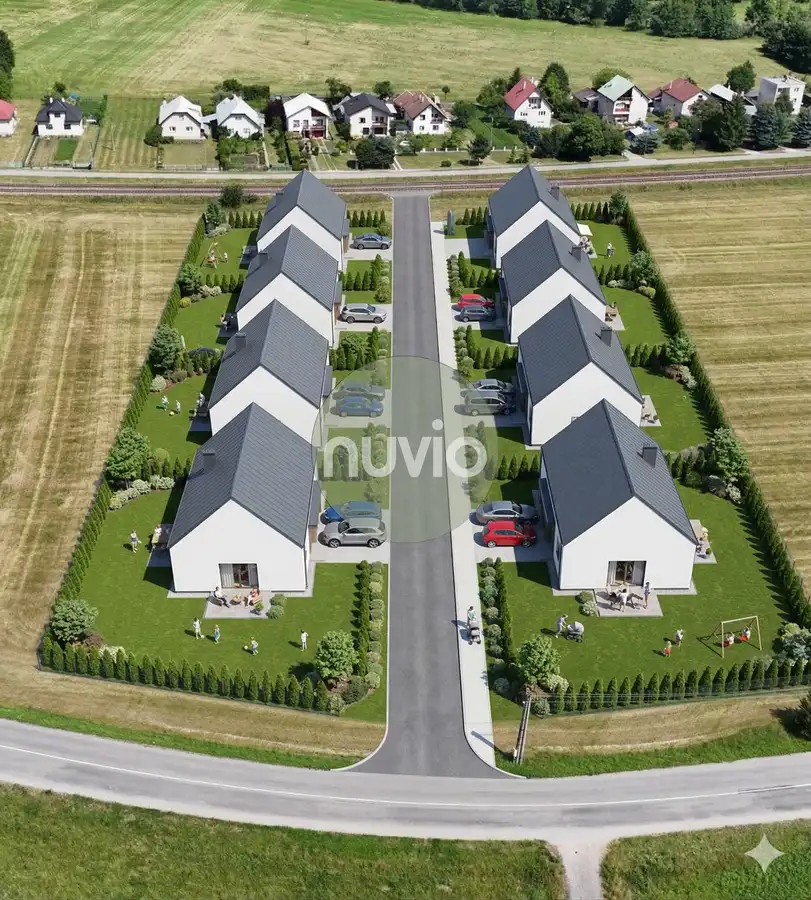
Pozemok 56 800 €Stavebné pozemky na predaj obec Jazernica Jazernica 710 m² Ponúkame na predaj 8 stavebných pozemkov na okraji obce Jazernica s rozlohou od 710m2 do 832m2. Na IBV je vydané právoplatné územné rozhodnutie.…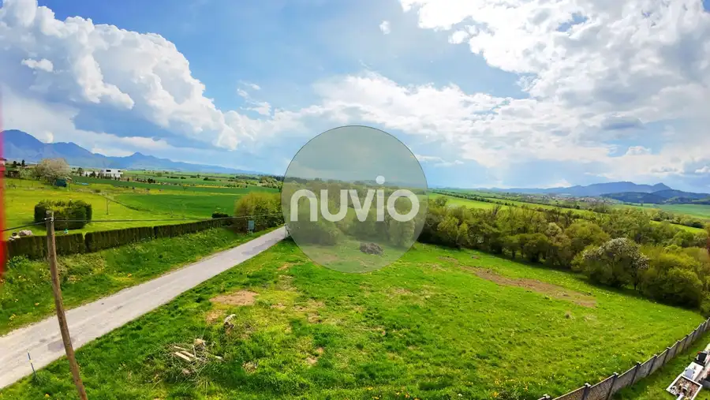
Pozemok4 79 900 €Pozemok na predaj obec Rakovo Rakovo 925 m² Ponúkame na predaj slnečný Pozemok pre s celkovou rozlohou 925 m2. Jedná sa o juho-západne orientovaný pozemok, čo zaručuje dostatok slnka počas…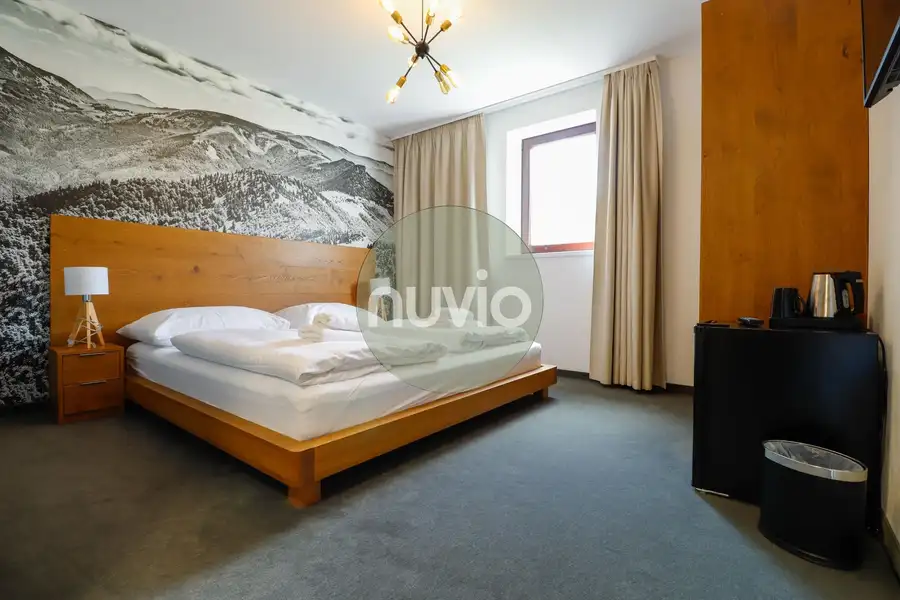
Apartmány6 72 500 €VKUSNE ZARIADENÝ APARTMÁN v top lokalite Snowland Valča 1-izbový20 m²1. podlažie Ponúkame na predaj Apartmán vhodný na investíciu najmä kvôli výbornej lokalite priamo v lyžiarskom stredisku Snowland vo Valčianskej doline. Je…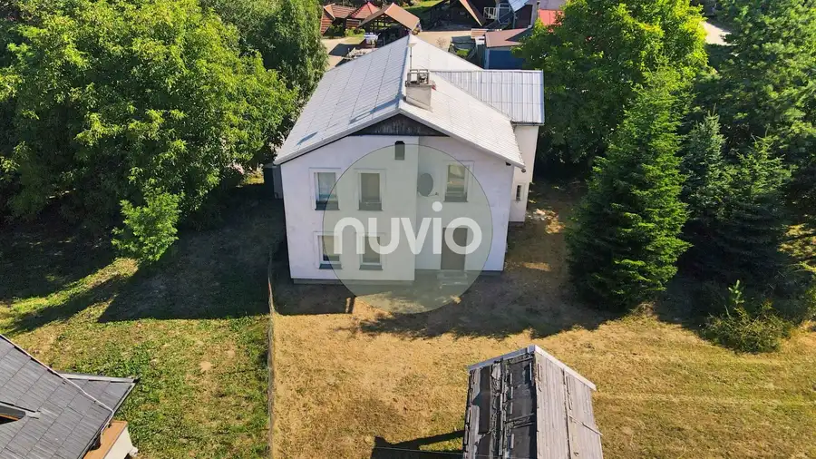
Rodinné domy10 185 700 €Veľký 5 izbový dom na predaj v obci Sklené Sklené 5-izbový240 m² Ponúkame na predaj priestranný murovaný 5-izbový rodinný dom, ktorý sa nachádza v malebnom a tichom prostredí obce Sklené, priamo obklopený krásnou…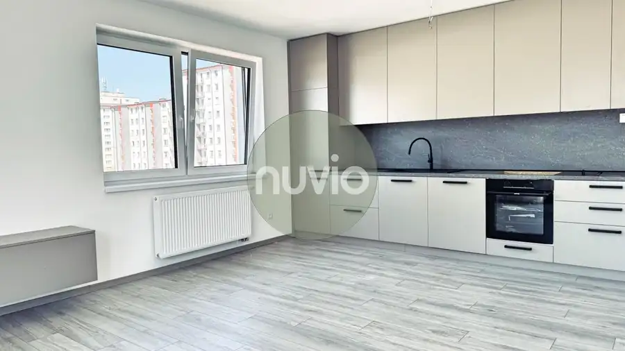
Byt7 Cena dohodouBYTY KOŠÚTY - 3 izbový byt na prenájom Martin 3-izbový70 m²3. podlažie Ponúkame na prenájom 3 izbový byt v novostavbe s celkovou výmerou 73 m². Byt disponuje praktickým dispozičným riešením, ktoré zabezpečuje pohodlné…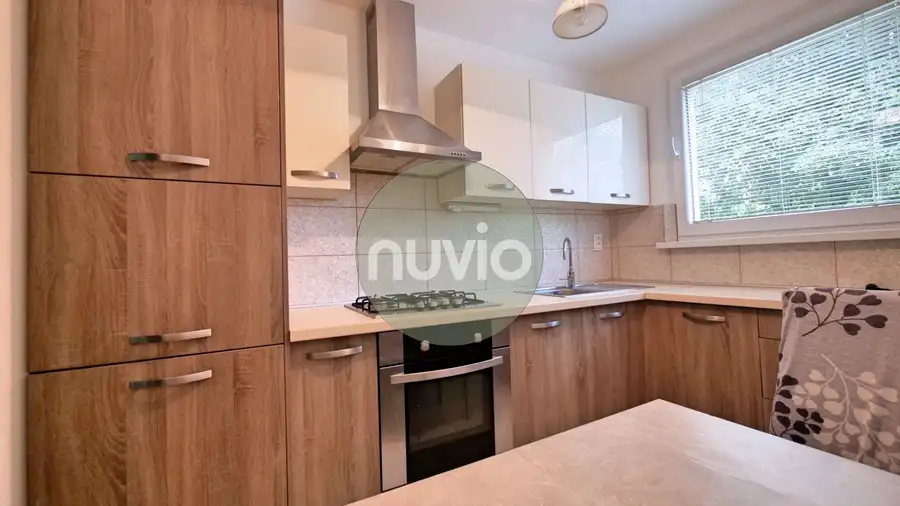
Byt10 Cena dohodou3 izbový byt na prenájom Martin - Jahodníky Martin 3-izbový69 m²2. podlažie Ponúkame Vám na prenájom priestranný a moderne zariadený 3-izbový byt vo veľmi obľúbenej a tichej lokalite Martin – mestská časť Jahodníky.…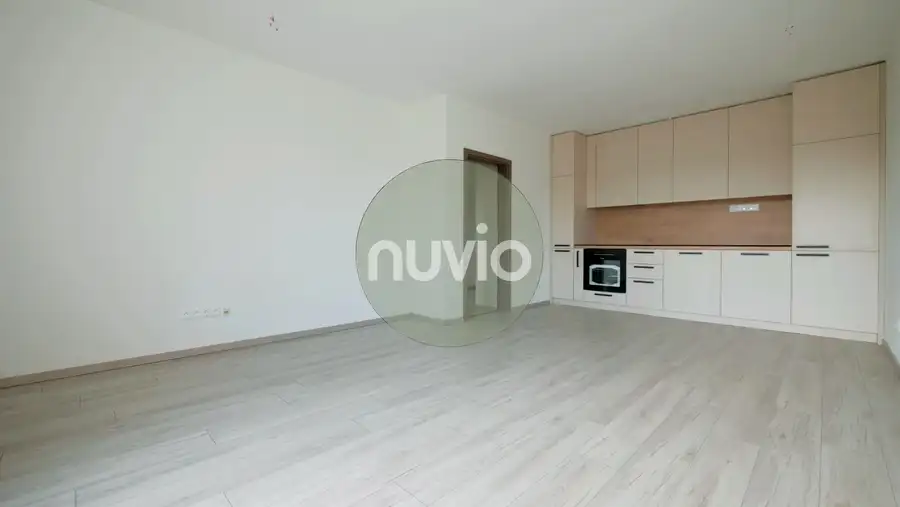
BytRezervované10 155 000 €BYTY KOŠÚTY - 2 izbový byt na predaj s výhľadom na zeleň Martin 2-izbový51 m²3. podlažie Ponúkame na predaj príjemný a svetlý 2-izbový byt v obľúbenom projekte novostavby Byty Košúty. Tento byt disponuje úžitkovou plochou 51 m² a nachádza…Tomuto výberu zatiaľ nezodpovedá žiadna ponuka. Napíšte mi, čo hľadáte.